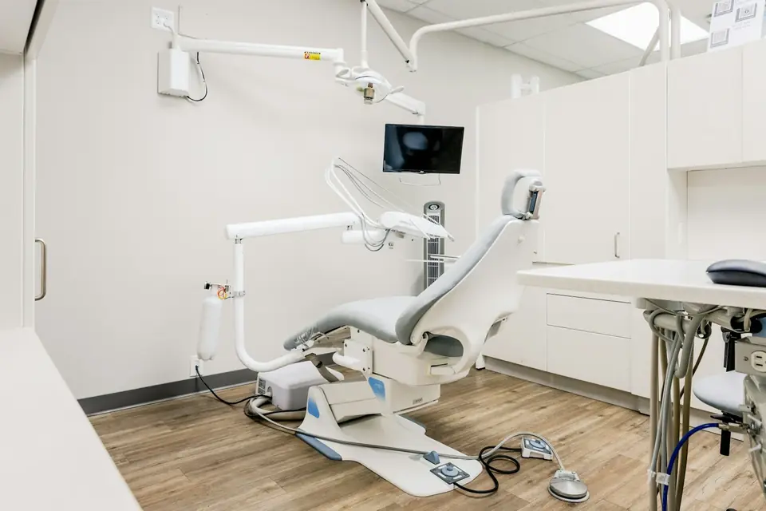

Würzburg und Umgebung
Praxisreinigung in Würzburg
Patienten achten genau darauf, wie eine Praxis aussieht. Wir reinigen Wartebereiche, Behandlungsräume und Sanitärräume gründlich und ohne den Praxisbetrieb zu stören.
Sauberkeit, die Ihre Patienten sehen
Im Wartezimmer, an der Anmeldung und auf der Patiententoilette entscheidet sich, ob sich Menschen in Ihrer Praxis gut aufgehoben fühlen. Gleichzeitig gelten für Behandlungsräume andere Anforderungen als für ein Büro. Wir planen die Reinigung deshalb Raum für Raum.
Grundlage ist Ihr Hygieneplan. Er legt fest, welche Flächen Ihr Praxisteam selbst desinfiziert und welche Aufgaben der Reinigungsdienst übernimmt. So greifen beide Seiten sauber ineinander, und nichts wird doppelt oder gar nicht erledigt.
Gerade in Praxen mit vielen Patienten am Tag summiert sich der Schmutz schnell: Straßenschmutz im Eingang, Fingerabdrücke an Türen und Griffen, benutzte Sanitärräume. Eine feste Reinigung sorgt dafür, dass Ihre Praxis jeden Morgen so aussieht, wie Ihre Patienten es erwarten.

Das gehört zur Praxisreinigung
Für jeden Raum halten wir fest, was gereinigt wird und wie oft. Bereiche mit besonderen Anforderungen, etwa Eingriffs- oder Sterilisationsräume, bleiben nach Absprache in der Verantwortung Ihres Praxisteams.
- Wartezimmer, Anmeldung und Flure
- Böden in Behandlungs- und Funktionsräumen
- Patienten- und Personaltoiletten
- Türgriffe, Lichtschalter und Handläufe
- Sozialräume und Teeküche
- Abfall nach Vorgabe der Praxis
Worauf wir in Praxen achten
Außerhalb der Sprechzeiten
Die Reinigung findet statt, wenn keine Patienten da sind. Den passenden Zeitpunkt stimmen wir mit Ihnen ab.
Nach Ihrem Hygieneplan
Mittel und Verfahren richten sich nach den Vorgaben Ihrer Praxis. Was der Plan für den Reinigungsdienst vorsieht, setzen wir um.
Verschwiegenheit
Patientenakten und Bildschirme bleiben unberührt. Was wir in Ihrer Praxis sehen, bleibt in Ihrer Praxis.
Was Praxen vor der Beauftragung klären sollten
Der wichtigste Schritt ist ein Blick in Ihren Hygieneplan. Darin steht, welche Flächen und Gegenstände wie oft gereinigt oder desinfiziert werden und wer dafür zuständig ist. Je klarer diese Aufteilung ist, desto genauer lässt sich der Auftrag für den Reinigungsdienst beschreiben. Bringen Sie den Plan am besten zum ersten Gespräch mit.
Ebenso wichtig sind die Zeiten. Viele Praxen haben an einzelnen Tagen Abendsprechstunden oder schließen mittwochs früher. Die Reinigung sollte so liegen, dass sie weder Patienten noch Ihr Team stört und die Räume am nächsten Morgen fertig sind.
Klären Sie außerdem, wie mit Abfällen umgegangen wird. Normaler Praxismüll, Papier und Verpackungen lassen sich meist problemlos mitnehmen. Für Abfälle mit besonderen Anforderungen gelten eigene Regeln, die Ihre Praxis vorgibt. Auch das gehört schriftlich in die Vereinbarung, damit später keine Fragen offen bleiben. Und schließlich: Legen Sie fest, wer im Team Ansprechpartner für den Reinigungsdienst ist.
Fragen zur Praxisreinigung
Ihre Frage zur Praxisreinigung ist nicht dabei? Dann rufen Sie an oder lesen Sie die häufigen Fragen zur Gebäudereinigung.
Weitere Leistungen
Für welche Praxen reinigen Sie?
Für Arztpraxen, Zahnarztpraxen, Physiotherapie, Ergotherapie, Logopädie und psychotherapeutische Praxen. Welche Räume wir übernehmen, legen wir gemeinsam fest.
Übernehmen Sie auch die Desinfektion?
Welche Flächen desinfiziert werden und von wem, legt Ihr Hygieneplan fest. Die Aufgaben, die dort für den Reinigungsdienst vorgesehen sind, übernehmen wir mit den vorgegebenen Mitteln.
Können Sie in der Mittagspause reinigen?
Für kurze Aufgaben wie die Patiententoilette kann das sinnvoll sein. Die vollständige Reinigung legen wir lieber in eine Zeit, in der niemand in der Praxis ist.